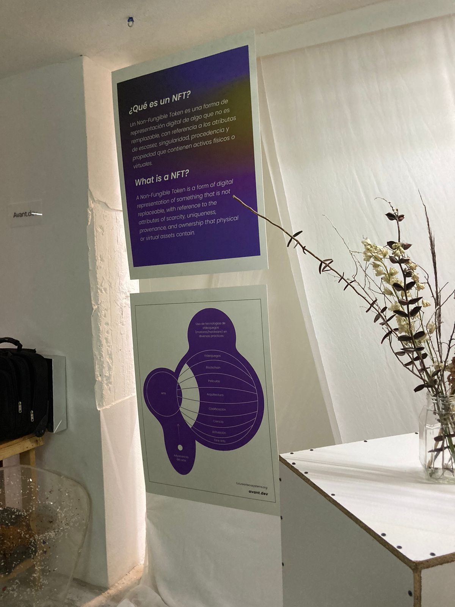
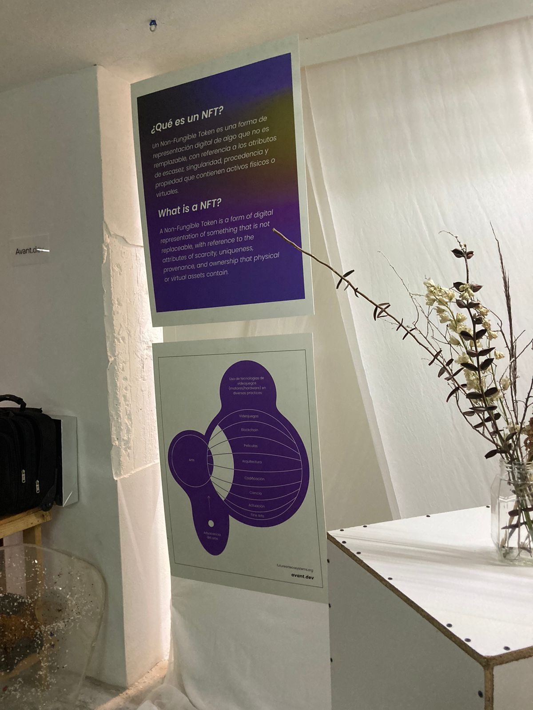

Future Artx Ecosystems Experiencia de Fine Arts, NTFs e Investigación Académica con sede en Clavo, Tersermundo y Avant.Dev del 29 abril al 1 mayo, 2022.

Actualmente, nuevos ecosistemas artÃsticos están comenzando a tomar forma con soluciones tecnológicas avanzadas que satisfacen a la perfección las demandas de los proyectos de arte, arquitectura, animación, coding, marketing, robótica y otras disciplinas.
El propósito de esta exposición es brindar una visión general clara y orientada sobre el metaverso, para descubrir la Escena del Arte NFT en México bajo la audacia de la tecnologÃa blockchain.
A-Frame que es un framework web de código abierto para crear experiencias de realidad virtual. Es mantenido por desarrolladores de Supermedium, Google y la comunidad WebVR.
 



Metamundi para:
celulares
web
Redes sociales